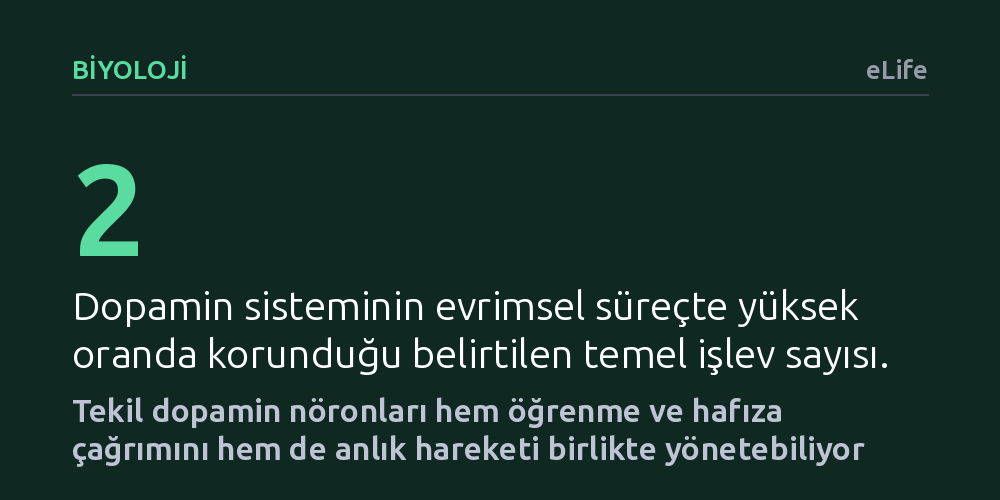

BIYOLOJI · eLife · 2026-10-19
Araştırmacılar sirke sineği larvalarında tekil dopamin nöronlarının hem öğrenmeyi hem de hareketi aynı anda yönetip yönetemediğini inceledi. Deneyler, tek bir nöronun hem ceza veya güvenlik hafızası kurabildiğini hem de hayvanın hızını ve kıvrılmasını doğrudan değiştirebildiğini gösterdi.
Öğrenme ve hareket gibi farklı beyin işlevlerinin daima ayrı nöron gruplarınca yürütüldüğü kabulünü sarsarak, tek bir sinir hücresinin birden fazla karmaşık davranışı tek başına yönetebileceğini gösteriyor.

Dopamin kimyasalı, hayvanlar aleminde evrimsel olarak en iyi korunmuş haberleşme araçlarından biridir. Beynimizde iki temel görevi üstlenir: Biri öğrenme sırasında sinyaller taşıyarak neyin güvenli neyin tehlikeli olduğunu öğretmek, diğeri ise vücudun anlık hareketlerini koordine etmektir. Memelilerde ve insanlarda bu iki görevin genellikle birbirinden tamamen bağımsız, farklı sinir hücresi toplulukları tarafından yürütüldüğü kabul edilir.
Peki sinir sistemi gerçekten bu kadar katı sınırlarla mı çalışır, yoksa tek bir nöron birden fazla görevi aynı anda sırtlanabilir mi? Bilim insanları, beynin karmaşık yapısını daha sade bir modelde test etmek için tek bir hücrenin sınırlarını araştırmaya karar verdi: Aynı dopamin nöronu hem bir şeyleri öğrenmemizi sağlayıp hem de o anda nasıl hareket edeceğimizi belirleyebilir mi?
Araştırmacılar bu soruyu yanıtlamak için genetik ve sinirbilim çalışmalarının temel modellerinden biri olan meyve sineği (Drosophila melanogaster) larvalarını inceledi. Sinek larvasının merkezi beyninde yer alan ve 'DL1' olarak adlandırılan özel bir dopamin nöron kümesine odaklandılar. Bu kümedeki nöronların her birini tek tek ele alarak işlevlerini test etmek amacıyla optogenetik teknolojisinden faydalandılar.
Optogenetik yöntemde, hedeflenen nöronlar ışığa duyarlı hale getirilir ve hassas ışık uyarımlarıyla yalnızca tek bir nöron açılıp kapatılabilir. Deney boyunca araştırmacılar, tekil bir nöronun uyarılmasının larvalarda ceza veya güvenlik hafızası oluşturup oluşturmadığını, önceden öğrenilmiş bir anıyı geri çağırıp çağırmadığını ve hayvanın anlık hızını veya kıvrılma davranışını değiştirip değiştirmediğini titizlikle kaydetti.
Elde edilen bulgular, tekil nöronların sanılandan çok daha zengin bir davranış repertuvarına sahip olduğunu ortaya koydu. DL1 kümesindeki her bir dopamin nöronu, kendine özgü fakat diğerleriyle kısmen örtüşen bir dizi davranışsal etki üretti. Yani nöronlar tek bir kalıba uymuyor, her biri farklı görev kombinasyonlarını bir arada yürütebiliyordu.
Daha da önemlisi, incelenen bazı tekil nöronların iki temel işlevi birden gerçekleştirdiği saptandı. Bu nöronlar bir yandan larvaya yeni bir hafıza kaydettirirken, diğer yandan hayvanın anlık hızını düşürüp kıvrılma hareketini artırarak hareket biçimini doğrudan değiştirdi. Böylece tek bir hücrenin hem anı oluşturan hem de anlık bedensel tepkiyi yönlendiren çok yönlü bir görev üstlenebildiği gösterildi.
Bu çalışma, sinir sisteminde hücrelerin işlevsel uzmanlaşmasına dair yerleşik bakış açısını esnetiyor. Beyindeki nöronların 'öğrenme hücreleri' ve 'hareket hücreleri' şeklinde kesin kutucuklara hapsedilemeyeceğini; tekil hücrelerin farklı davranış bağlamlarında şaşırtıcı derecede geniş bir görev yelpazesini yerine getirebildiğini gösteriyor.
Elbette bu bulguların insan beyni için de birebir geçerli olduğunu söylemek için erkendir; çünkü araştırma sinek larvalarında yürütülmüş temel bir laboratuvar çalışmasıdır. Yine de dopamin sisteminin evrimsel olarak canlılar arasında çok güçlü biçimde korunmuş olması, benzer çok yönlü nöronların memelilerde ve insanlarda da bulunup bulunmadığı sorusunu akıllara getiriyor.